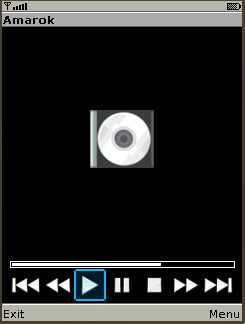

Set(...) / ExecAndSet(...) commands
 This command used to control and customize GUI of J2ME/Android client. It is possible to change:
This command used to control and customize GUI of J2ME/Android client. It is possible to change:
- caption of screen
- title and status fields
- arrange icons from predefined icon set
- change background and foreground color
- change font size
- show album cover image
- change icon layouts (skins)
- use internal vibrator of the phone
- toggle fullscreen mode
- show lists and texts data
- show MC-like file manager
- show images
Set(...) command is used to set various parameters of GUI of J2ME/Android client with impicit data specification.
ExecAndSet(..) do the same thing, but it uses the results of executed command as a part of command which will be sent to J2ME/Android client.
For details see examples below.
There are a plenty of ways to use this command:
Set(icons, ...)
Format: Set(icons,caption,1,name1[,2,name2...,*,name11,#,name12])
where nameX specifies desired action. This command sets the caption of J2ME/Android client window and changes shown icons.
1=Exec(xmmsctrl play);Set(icons,XmmsPlaying,5,stop,1,kill); 1=ExecAndSet(icons,echo "XmmsPlaying,5,stop,1,kill");
if You do not want to change the caption of the J2ME/Android client window then it is possible to write:
1=Exec(xmmsctrl play);Set(icons,SAME,5,stop,1,kill);
Set(title, ...)
Format: Set(title, new_title)
This command sets the title field of J2ME/Android client.
Set(title,XMMS); ExecAndSet(title,whoami);
It is possible to add line break characters to the text. It could be done with "\n".
Set(status, ...)
Format: Set(status, new_status)
This command sets the status field of J2ME/Android client.
3=Exec(xmmsctrl play);Set(status, Playing)
3=ExecAndSet(status,sh -c "if xmmsctrl playing;\
then echo Stopped; else echo Playing; fi")
Set(bg ...)
Format: Set(bg,R,G,B)
Where R, G, B values should be beetween 0 and 255. This command sets the background color of control (main) screen of J2ME/Android client. For example to set background to blue:
3=Set(bg,0,0,255); 3=ExecAndSet(bg,echo "0,0,255");
Set(fg ...)
Format: Set(fg,R,G,B)
Where R, G, B values should be beetween 0 and 255. This command sets the foreground color of control (main) screen of J2ME/Android client. For example to set foreground to blue:
3=Set(fg,0,0,255); 4=ExecAndSet(fg,echo "0,0,255");
Set(font ...)
Format: Set(font [,small | medium | large] [,bold] [,italic] [,underlined] [,system | monospace | proportional])
This command sets font parameters for the title and status fields of control (main) screen of J2ME/Android client. Java realization in the phone could support only some subset of fonts which can be specified by this command.
For example, the following commands sets small underlined bold proportinal font:
3=Set(font,small,underlined,bold,proportinal); 4=ExecAndSet(font,echo "small,underlined,bold,proportinal");
Set(volume ...)
Format: Set(volume,X)
Where X should be between 0 and 100. This command sets value of volume bar of J2ME/Android client (it needs to issue Set(skin,....volume) command before to make volume bar visible):
3=Set(volume,50); 4=ExecAndSet(volume,xmmsctrl getvol);
Set(cover ...)
Format: Set(cover,/path/to/image/file)
3=Set(cover,/tmp/album_cover.png);
It is user responsibility to shrink image to the appropriate size on server side. Use Get(cover_size) command to retrieve cover size. This command works only if skin previously set to bottomline with ticker parameter:
4=Set(skin,bottomline,ticker);
Set(vibrate)
Format: Set(vibrate)
This command switches on internal vibrator of the phone (if exists) for 1/2 sec.
5=Set(vibrate);
Set(text, ...)
Format: Set(text,add|replace|show|clear|close|fg|bg|font, _data_)
This command shows help test on the screen of cell phone. See detailed description here.
#=Exec(xmmsctrl quit);\ Set(text,replace,Help,To run Xmms press 1) #=ExecAndSet(text,replace,Date,date)
Set(list ...)
andSet(iconlist ...)
Format:
Set(list,add|replace|clear|show|close|fg|bg|font, _data_) or
Set(iconlist,add|replace|clear|show|close|menu|fg|bg|font, _data_)
This command used to create and manage lists. It could be useful to manage player playlists or to browse directory structure. See detailed description here. The iconlist can contain icons in front of each list item.
3=Set(list,replace,Shell commands,reboot,shutdown,uptime,dmesg);
3=ExecAndSet(list,replace,Example,more some_file.txt);
3=Set(iconlist,replace,Shell commands,\
launch:reboot,exit:shutdown,question:uptime,question:dmesg);
Set(menu ...)
Format: Set(menu,add|replace|clear[,_data_])
This command used to manage menues. Custom made menu could be added to each screen of J2ME/Android client. See detailed description here.
4=Set(menu,add,Random,Repeat,Shuffle); 4=ExecAndSet(menu,add,echo "Random,Repeat,Shuffle");
Set(skin ...)
Format:
Set(skin,default|bottomline [,keypad_only|joystick_only] [,ticker|noticker] [,volume] [,choose,_button_] [,up,_button_] [,down,_button_])
4=Set(skin,default,ticker);
4=ExecAndSet(skin,echo "bottomline,joystick_only,\
volume,up,VolUp,down,VolDown");
|
 This command used to choose icon layout ("skin") to show. There are 2 icon layouts defined: default and bottomline. If keypad_only parameter specified, then it will be possible to send commands only by pressing numeric keys. If joystick_only parameter is specified, then it will be possible to send commands only by pressing joystick central button. If choose,_button_ parameter is specified then initial selection will be set to button with appropriate number. (0-9, *, # are the valid values for the button). |
|
If noticker parameter is specified then title field will be shown as static text. If volume parameter is specified then volume bar will be shown. In bottomline icon layout if there will be not enough space on phone screen to show all icons, then some of them will be omitted. If J2ME contains all icon sets then if heigth of the screen is less than
It is possible to change icon size with Set(parameter,icon_size,...) command. Beware, for J2ME client valid values are only 16/32/48/64/96/128. Note: to make this command work it needs to use J2ME which contains specified icon set. |
|
In bottomline icon layout it is possible to specify action to JoystickUp and JoystickDown with help of "up,_button_up_" and "down,_button_down_". If user pushes JoystickUp/JoystickDown then _button_up_/_button_down_ events will be sent. Note: It is possible to change distance between icons Set(parameter,icon_padding,...) command. |

Set(filemanager ...)Format: Set(filemanager, add|replace|select, left|right, [_data_]) This command used to show file manager window. It looks like MC and allows to do basic file operations. See detailed description here. 3=Set(filemanager,add,left,.,..); 4=ExecAndSet(filemanager,add,left,ls -1); |
 If ticker parameter is specified then ticker (running text) will be used to show title field instead of static text.
If ticker parameter is specified then ticker (running text) will be used to show title field instead of static text.
Set(fullscreen ...)
Format: Set(fullscreen,on|off|toggle)
Set fullscreen mode on or off.
3=Set(fullscreen,toggle); 4=ExecAndSet(fullscreen,echo on);
Set(editfield ...)
Format: Set(editfield,caption_value,label_value,init_value)
Shows edit field on phones screen. When used press Ok then reply Ok(0,_entered_value_) will be sent to server.
3=Set(editfield,Enter parameters,\
Parameters,Enter your data here);
4=ExecAndSet(editfield,
echo "Enter parameters,Parameters,Enter your data here");
For example, if user enters, say - new_line - and presses Ok, then reply Ok(0,new_line) will be sent.
Set(disconnect)
Format: Set(disconnect)
Force J2ME/Android client to disconnect from PC.
0=Set(disconnect);
Set(parameter, ...)
Format: Set(parameter,[_parameter_name_,_parameter_value_]+)
This command used to tune J2ME/Android client in some aspects (which could be hardware-dependent). See detailed description here.
Set(repaint)
Format: Set(repaint)
This command force J2ME client to repaint the screen.
3=Set(repaint);
Set(image ...)
Format:
Set(image,window,_image_file_name_) or
Set(image,icon,_icon_name_,_image_file_name_) or
Set(image,show|close|cursor|nocursor|remove_all)
This command used to show images on screen of cell phone or upload icons which could be used in Set(icons,...) command. See cfg-example/Server-mode/winManager.cfg and cfg-example/Server-mode/iconUpload.cfg for details. See detailed description of Set(image ...) here.
3=Set(image,window,/tmp/image.png);
Set(popup ...)
Format:
Set(popup,show|hide,_message_) or
This command used to show popup message on screen of cell phone.
4=Set(popup,show,Please wait !);
Data caching
To mimimize traffic between PC and J2ME/Android client results of the following commands will be cached:
- Set | ExecAndSet(bg,...);
- Set | ExecAndSet(cover,...);
- Set | ExecAndSet(fg,...);
- Set | ExecAndSet(font,...);
- Set | ExecAndSet(icons,...);
- Set | ExecAndSet(skin,...);
- Set | ExecAndSet(status,...);
- Set | ExecAndSet(title,...);
- Set | ExecAndSet(volume,...);
Then one of these command will be executed next time, it will be send to J2ME/Android client only if command data are changed.